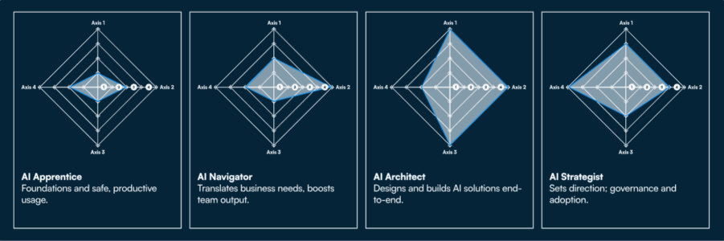

AI has all the markings of a breakthrough in the business world, with massive investment, strong support from senior executives, and highly attractive economic projections. In fact, according to McKinsey research on the economic impact of AI, it has the potential to deliver additional global economic activity of around $13 trillion by 2030, representing a 16 percent increase in cumulative GDP. Yet despite this promise, many organisations are still waiting to see tangible results. The reason lies in persistent AI adoption challenges that prevent promising initiatives from translating into everyday business value.
Every big business has a growing inventory of highly capable AI solutions at its disposal. The problem is connecting that potential with lasting results within the organization. AI changes the way in which decisions are made, how work is shared, and who is accountable for it. If people are not equipped to cope with that, the adoption of AI is left fragmented. Some not trusting, others misusing, but mostly avoiding the use of AI.
Key Challenges in AI Adoption for Companies
Challenges of Integration with Existing Systems
AI projects often lack scalability because they are not integrated into core business systems. While a tool may perform well in isolation, its impact remains limited when it operates outside existing workflows and platforms. As a result, misalignment between technical teams and business functions becomes a major barrier to scaling AI successfully.
Handling Ethics and Transparency in AI
By involving high-stakes decisions, organizations are now being compelled to confront the problem of bias, trust, and data protection due to the influence AI is having on those decisions. This absence of guidelines is creating significant AI adoption issues. That is why corporations that use AI struggle to get beyond the pilot phase. It is a complex undertaking that must be put into people's perspective.
What Companies Adopting AI Can Do to Overcome Challenges
The best organizations that address AI adoption challenges are ones that take a capability-first approach. Proper adoption focuses on investing in people, structure, and governance, apart from investing in technology.
Develop a Robust Adoption Plan for AI
The adoption of AI begins with alignment. The best-run organizations list AI projects directly in line with business goals, specify ownership, and use metrics that go beyond the metrics used for measuring success on the adoption of AI.
Upskill Teams Using a Persona-Based Approach to AI Literacy
Workforce readiness is a critical consideration for success with AI. Generic training is a failure because the effects of AI affect people differently. Kubicle’s Persona-Based AI Literacy Training is a solution because it matches learning with the following four personas of AI:

• AI Apprentice
The apprentices develop a fundamental level of comprehension, as well as safe use practices. This establishes a baseline level of AI fluency that prevents abuse, boosts confidence, and creates a critical mass necessary for AI to become a work routine.
• AI Navigator
They interpret business requirements to develop real-world AI application solutions. This category typically provides short-term productivity increases, with a training emphasis on applying AI within existing work practices, with a high adherence to strong data and compliance standards.
• AI Architect
Architects are responsible for designing and integrating AI systems. Their skills drive the scalability, reliability, and risk protection of these solutions. Companies with sound internal architecture are less dependent on vendors.
• AI Strategy
Strategists define directions, frameworks of governance, and adoption. The need for strategists is becoming paramount, especially with increased regulatory oversight.
This method of approaching personas helps to identify the existing state of AI capabilities and design learning journeys that don't overwhelm the teams.
Rely on Existing Infrastructure to Grow AI
The best firms leverage AI on top of, and in conjunction with, current systems. This gets results faster with less disruption, because it integrates seamlessly with the way people work.
Encourage a Culture of Collaboration to Incorporate AI
The adoption rate of AI improves when there is collaboration between the technical and non-technical teams. Alignment with cross-functional teams helps ensure that the AI solution is relevant, trusted, and usable. The most important part is the role of leadership, which helps the adoption of AI by your employees, especially when the leaders use it responsibly.
Ensure Transparency and Ethical AI Use
Trust is the foundation for scalability. Ethical frameworks, explainability guidelines, and accountability frameworks minimize uncertainty. This way, once the strengths and boundaries of AI are known, use cases increase because employee safety is improved.
Why AI Adoption Is Critical for Business Success
Organizations that succeed in overcoming AI adoption challenges operate more efficiently, are innovative, and are adaptable than others. Companies adopting AI will be poised to:
• Increase the productivity of functions through scale
• Empowering superior decision-making through quick, more accurate insights
• Be agile with the market moves and dynamics
• Reduce regulatory, operational, and reputational risks
• Resilience in an Increasingly AI-Enabled Economy
Those companies that fail to invest in such projects observe AI adoption derail, price escalation, and a lack of faith in the possibility of AI-led transformation. It is on this background that the implementation of AI is a critical element that determines the general competitiveness.
Build AI Skills Tailored to Your Team
Challenges in AI adoption are complex but can be overcome. Using the proper skills strategy, organizations can overcome experimentation with AI and integrate it within the work process.
The Kubicle AI literacy training for employees is available to organizations throughout this entire process, in a learning style that is centered on personas that align with business responsibilities.
For more information on how Kubicle can assist with your AI adoption plans, please don’t hesitate to contact us.